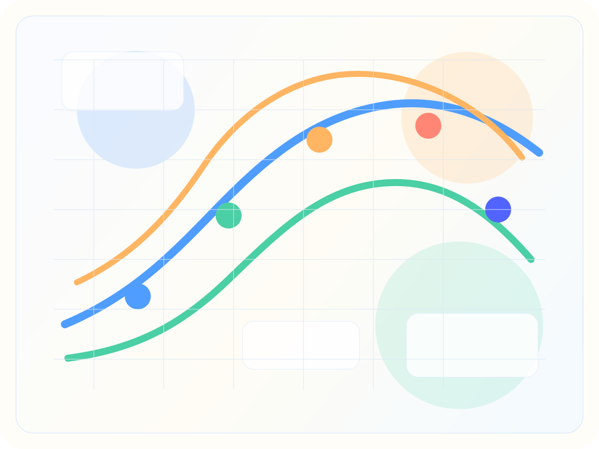
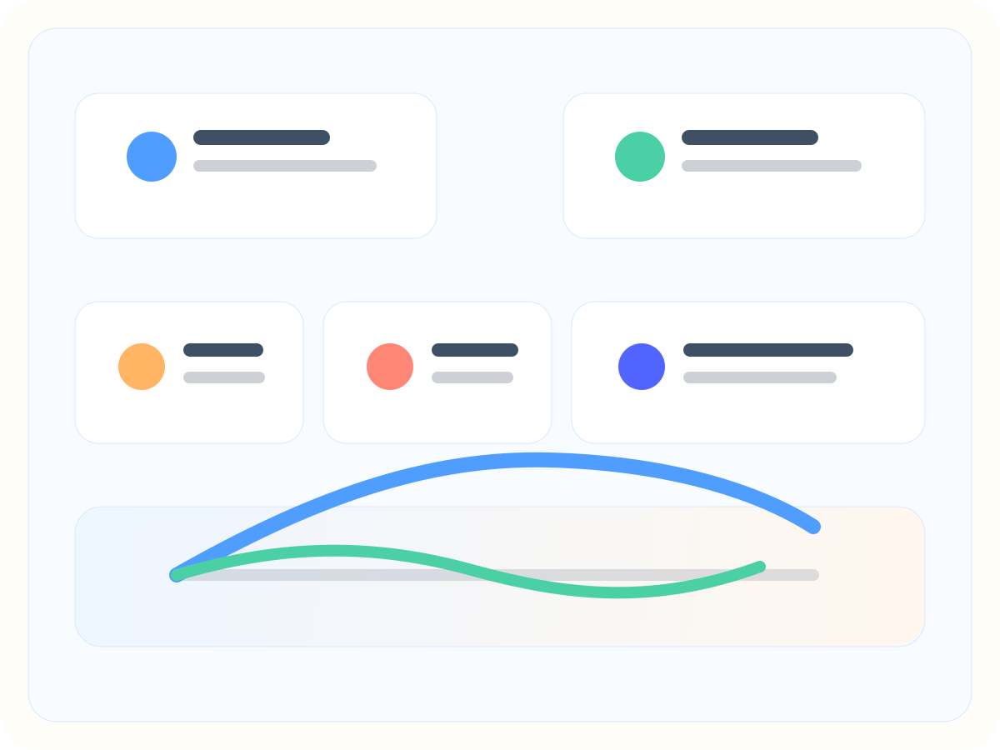
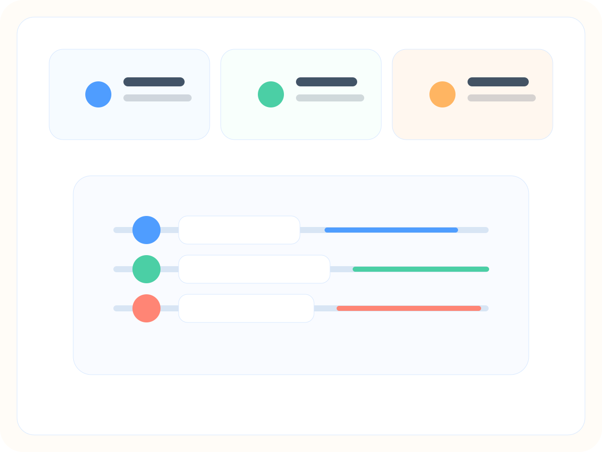
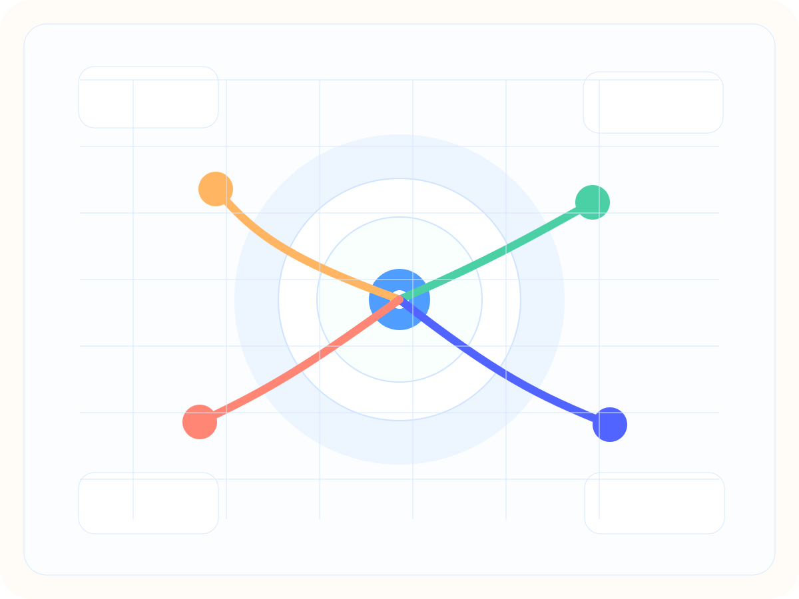

A brighter, more useful AI map
From the birth of AI to coding agents, harnesses, and world models.
This rebuild fixes the broken images, replaces the dark theme with a bright editorial system, expands the historical timeline, and adds dedicated interactive chapters for Codex, Cursor, Claude Code, OpenClaw, harness engineering, and the fast-growing world-model frontier.

Latest product shift
Codex, Cursor, Claude Code, and OpenClaw are pushing AI from replies to running systems.
The current competition is not only about model quality. It is about loops, memory, tools, reviews, automations, and the surfaces around the model.
Future bet
World models could turn AI from reactive generation into simulation-driven planning.
That is why this version ends with a much deeper world-model chapter, including companies, projects, papers, and demos.
What is moving now
Six live surfaces worth watching right now
Click across the current frontier. This chapter focuses on official product surfaces and docs so the story stays current instead of drifting into recycled hype.

Surface
Loading current frontier item
Why it matters
Current signal
History
A detailed timeline from early AI ambitions to the agent era
This is the long arc: foundational ideas, deep learning’s breakthroughs, the language-model interface shift, and the recent rise of coding agents and harness engineering.
Year
Loading timeline item
Representative work
Why it changed the field
Harness engineering
The outer system layer is becoming the product
Harness engineering is where coding agents become dependable: instructions, skills, rules, hooks, evals, review loops, CI, background jobs, and recovery paths. Click a skill below to see examples, resources, and concrete artifacts.

Harness skill
Loading harness skill
Artifacts to expect
Why teams care
Future
World models, spatial intelligence, and the simulation turn
This chapter goes deeper than a single slogan. It tracks current companies, public products, open projects, published papers, and video explainers around world modeling and adjacent physical-AI systems.

Shift
From next-token continuation to consequence modeling
Medium
From chat windows to navigable and controllable worlds
Use case
From demos to robotics, simulation, planning, and spatial creation
World model resource
Loading world-model item
Best for
Why it belongs here
Resource atlas
Search, filter, and jump into the best links on the page
This is the fast lane if you already know what you want: papers, docs, products, company pages, or videos.